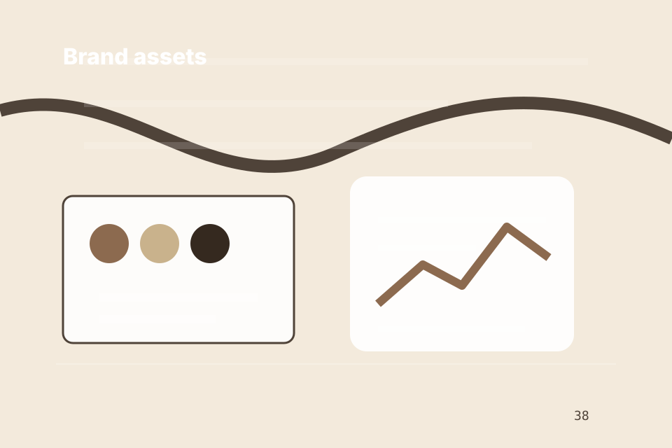

<!-- Static hand-authored header partial. -->
<a class="skip-link" href="#main">Skip to content</a>
<header class="site-header header-apothecary-shop-header" data-header data-header-type="Apothecary shop header" data-mobile-menu="Primary-reference mobile navigation">
  <div class="header-utility"><label>Search <input type="search" aria-label="Search catalogue"></label><a href="../contact.html?route=stock" data-track="header_catalogue_route">Ask availability</a></div>
  <div class="container nav-shell">
    <a class="brand" href="../index.html" aria-label="SkinTheory home">
      
      <span><strong>SkinTheory</strong><small>Beauty retail with muted apothecary surfaces, serif detail, and calm product education</small></span>
    </a>
    <button class="menu-toggle" type="button" data-menu-toggle aria-expanded="false" aria-controls="site-menu">Browse</button>
    <nav class="site-nav mobile-menu-primary-reference-mobile-navigation" id="site-menu" aria-label="Main navigation">
      <a href="../index.html" aria-current="page">Home</a><a href="../brand.html">Brand</a><a href="../shop.html">Shop</a><a href="../products.html">Products</a><a href="../routine.html">Routine</a><a href="../contact.html">Contact</a>
    <a href="../asset-system.html">Assets</a></nav>
    <a class="nav-cta" href="../contact.html" data-track="header_cta">Build Routine</a>
  </div>
</header>
